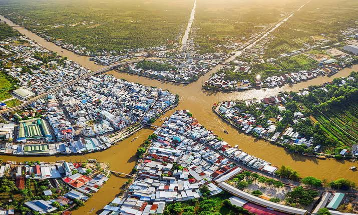
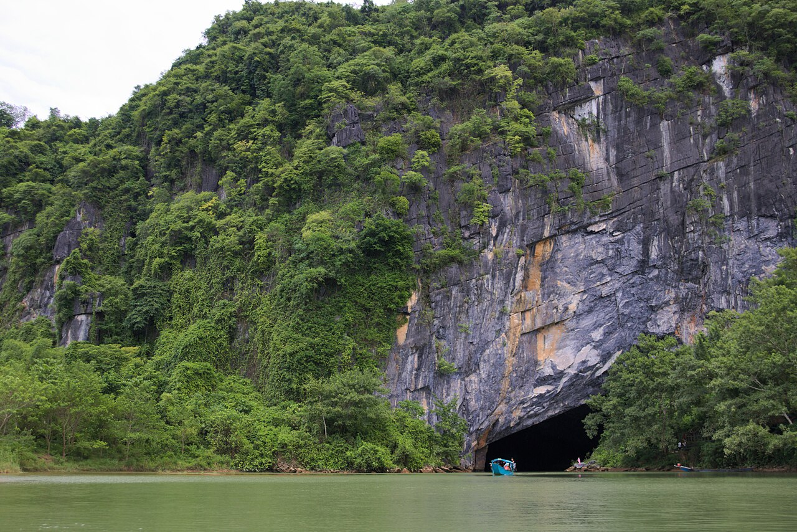

Thư viện ảnh Việt Nam
Bộ sưu tập 6 danh thắng tiêu biểu — minh hoạ thẻ figure / figcaption.
Hình 1. Vịnh Hạ Long
Hình 2. Hang Sơn Đoòng
Hình 3. Thác Bản Giốc
Hình 4. Fansipan

Hình 5. Đồng bằng sông Cửu Long

Hình 6. Động Phong Nha